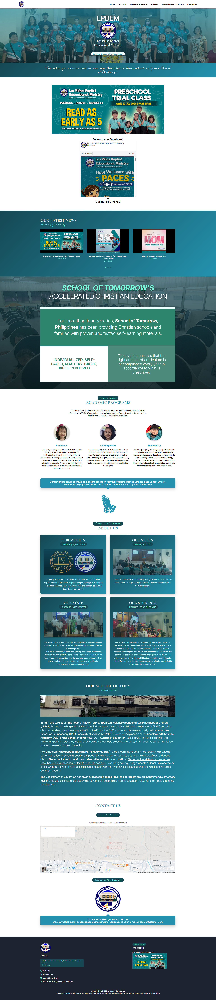
#fullstackLPBEM School Website
The official website for Las Piñas Baptist Educational Ministry, owned end-to-end: backend, frontend, and CMS. A full production site for a real school community, not a campaign replica.
Front-end Web Developer. 10+ yrs shipping marketing campaigns, now AI-assisted.
200+ landing pages shipped since 2014. These 18 are the handpicked best of that work.

#fullstackThe official website for Las Piñas Baptist Educational Ministry, owned end-to-end: backend, frontend, and CMS. A full production site for a real school community, not a campaign replica.
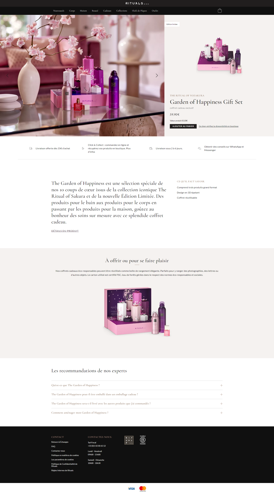
#landingpageA marketing campaign landing page rebuilt for Rituals, converting a PSD/Figma concept into a responsive, cross-device page ready for paid traffic. Built for a fast path from hero to offer.
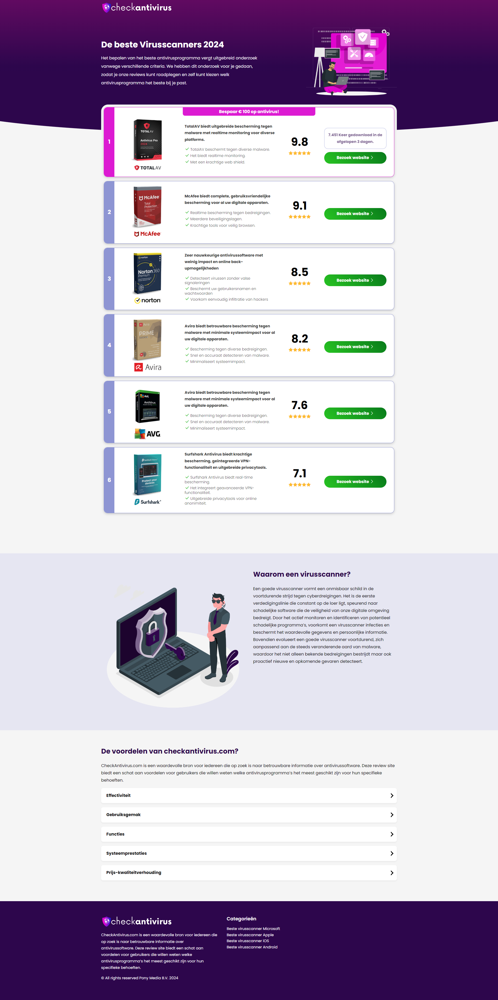
#landingpageA security-software campaign page built for a fast-turnaround paid-traffic launch. Responsive layout designed to convert visitors quickly across desktop and mobile.
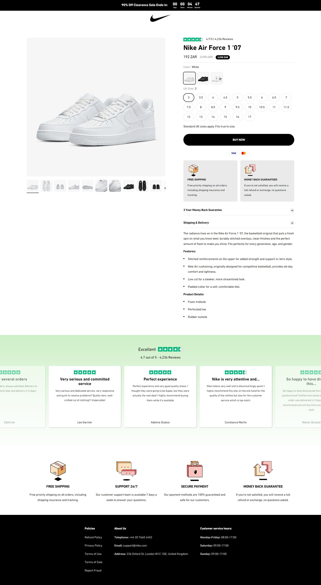
#landingpageA product-drop landing page for a Nike Air Force campaign, built for speed on mobile ad traffic with a direct path to the offer.
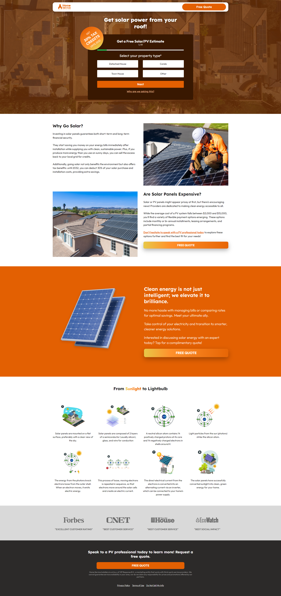
#landingpageA lead-generation landing page for a solar installer campaign, with a form-first layout tuned for conversion and quick homeowner qualification.
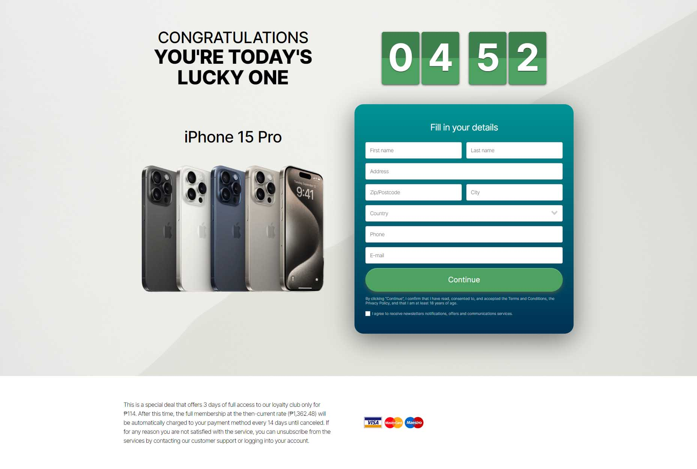
#landingpageA product-launch campaign page for the iPhone 15, built for a limited promotional window and optimized for a short, high-traffic launch period.
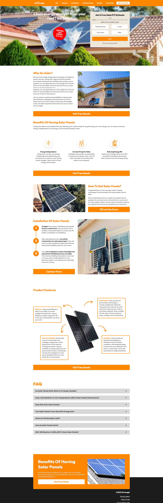
#surveyA multi-step solar-quote survey built as a split-test variant for a lead-generation campaign, guiding visitors through a short qualification flow.
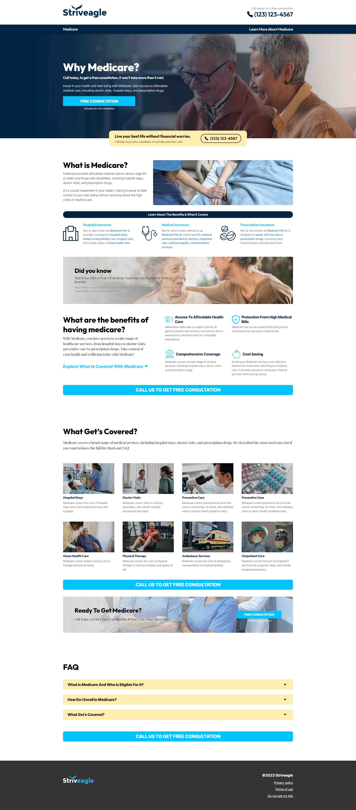
#landingpageA Medicare enrollment campaign page, blue palette variant, built for a regulated-industry lead-generation flow as part of a palette split-test series.
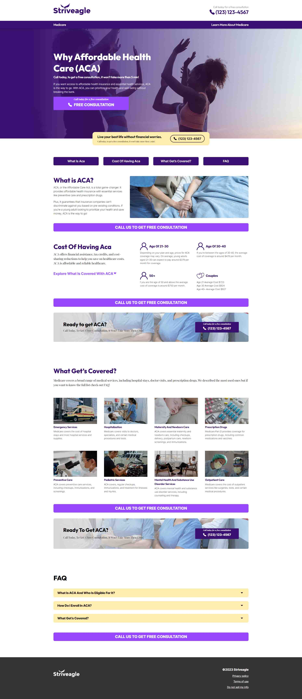
#landingpageA Medicare enrollment campaign page, purple palette variant, split-tested against the blue and red builds in the same Striveagle series.
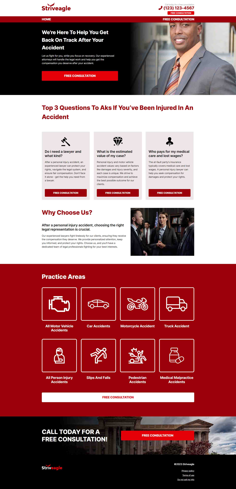
#landingpageA Medicare enrollment campaign page, red firm variant, the third palette split-test in the Striveagle Medicare series.
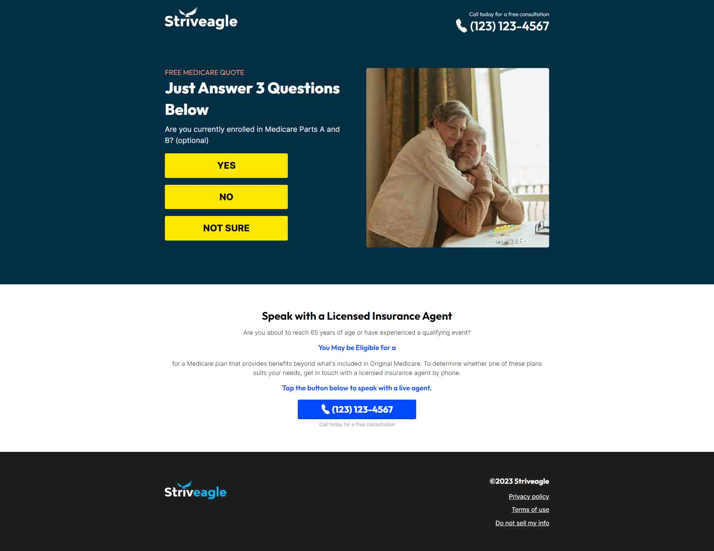
#surveyA simplified, single-question variant of the Medicare survey flow, stripped down for a faster-loading split test against the fuller survey builds.
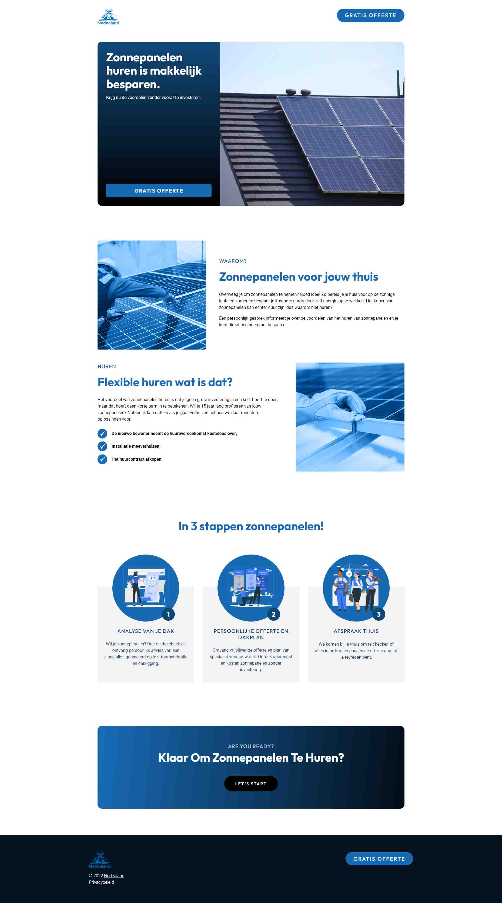
#surveyA localized, multi-step solar-quote survey built for the Dutch market under the Nedealand campaign, guiding visitors through a short qualification flow.
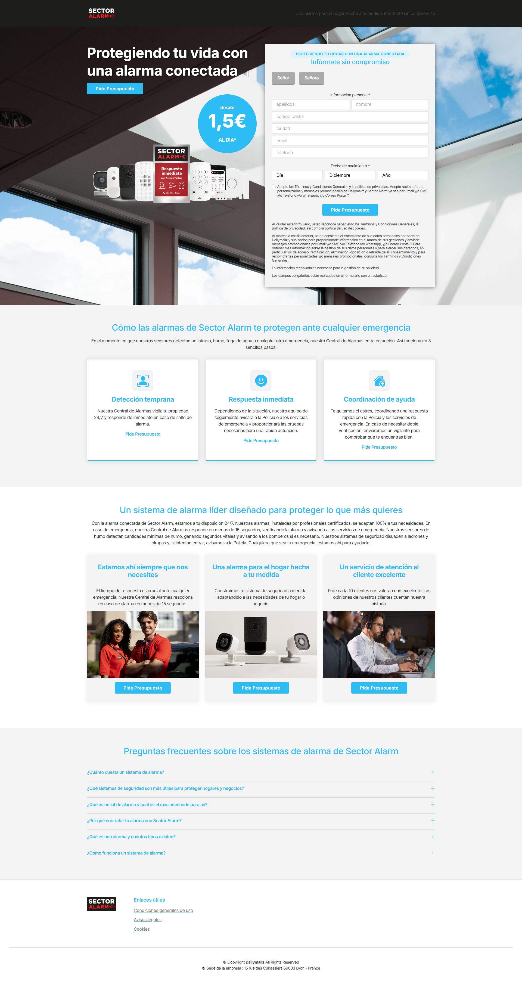
#landingpageA home-security campaign page for Sector Alarm, built as a conversion-focused landing page for paid traffic.
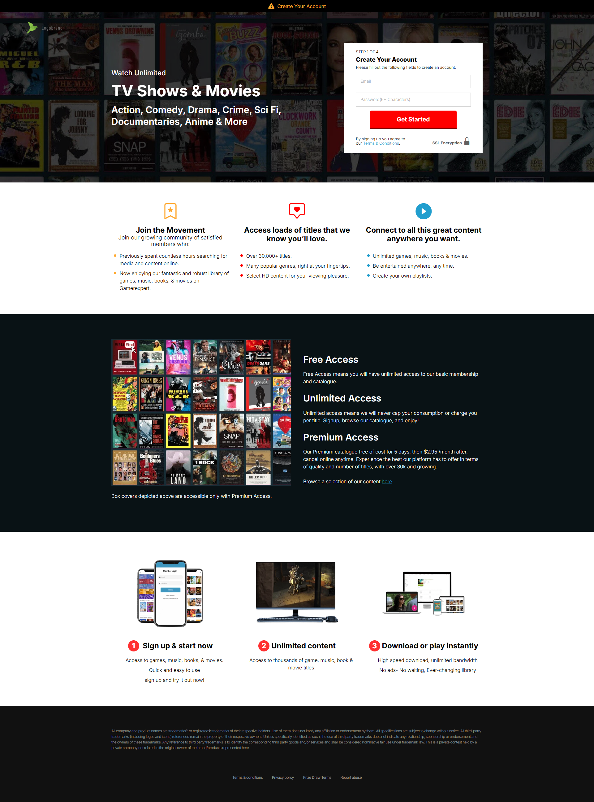
#landingpageA subscription-offer campaign page for a streaming service, built for a fast paid-media launch with a clear single call to action.
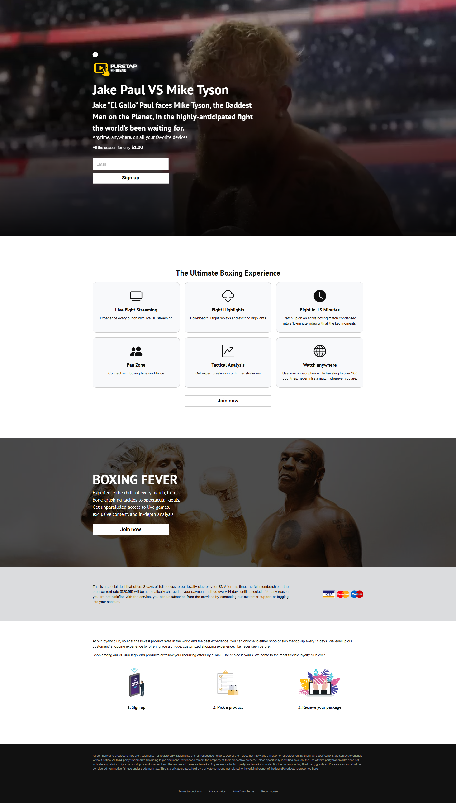
#landingpageAn event-hype campaign page for the Jake Paul vs. Mike Tyson fight, built to a hard launch deadline ahead of the event.
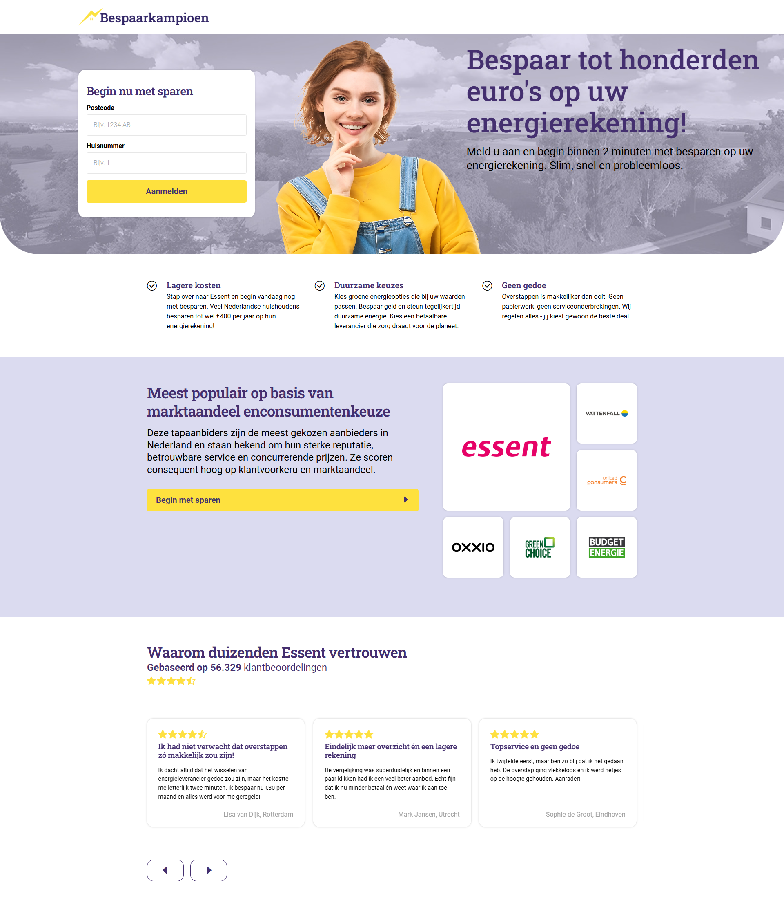
#landingpageA Dutch energy-savings campaign with a multi-page flow, including OTP verification and follow-up pages, beyond a single landing page.
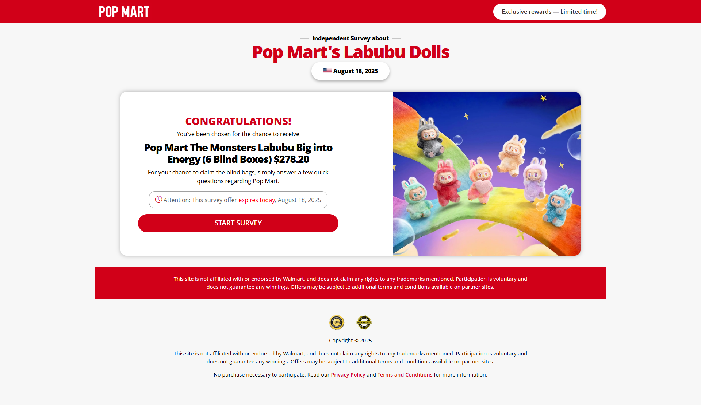
#surveyA collectible-drop survey/quiz page for a PopMart Labubu campaign, the most recent build shipped in this portfolio.
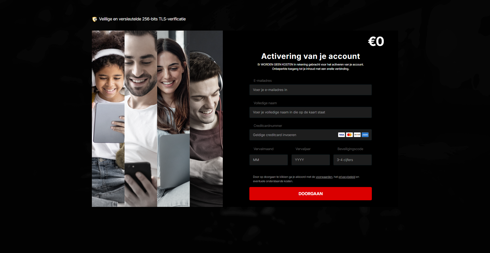
#formA high-contrast form prototype exploring a bold black-and-red palette on a checkout-style layout.
No projects match “”